Алексей Михайлович

Годы жизни:
9 марта 1629 г. – 29 января 1676 г.Годы правления:
24 июля 1645 г. – 29 января 1676 г.Характеристика
Такова была природа этого царя - живая, впечатлительная, добрая и мягкая. Любовь к чтению и размышлению еще больше развила светлые стороны его характера. Алексей Михайлович был, как известно, одним из образовенейших людей московского общества; следы его начитанности, церковной и светской, разбросаны по всем его писаниям. (...) Он был прекрасно знаком с литературой того времени и до тонкости усвоил себе книжный язык. В серьезных письмах и сочинениях царь любил пускать в ход книжные обороты, употреблять цветистые афоризмы. (...) у царя каждый афоризм продуман, из каждой фразы глядит живая мысль
С. Ф. ПлатоновСемья
Как и его отцу, Алексею не удалось взять в жены первоначальную избранницу в результате интриг, в которых, по всей видимости, принимал участие Борис Морозов, под чьим влиянием находился Алексей в начале правления. Первая его жена Мария Милославская была сосватана ему Морозовым с целью породниться с царской семьей (Морозов женился на сестре царицы). В первом браке в царской семье родилось 13 детей. Наставником детей Алексея Михайловича был Симеон Полоцкий, который дал им хорошее образование, а также, будучи выходцем из княжества Литовского, привил детям интерес к европейской культуре. После смерти Марии Милославской царь женился второй раз - на юной Наталье Нарышкиной, которая родила ему троих детей. В общей сложности у Алексея Михайловича было 16 детей, трое из которых стали царями. После смерти царя Милославские и Нарышкины еще долго враждовали, борясь за влась в стране, причем за неимением взрослых дееспособных мужчин в роду первую скрипку играли именно женщины: дочь царя Софья и ее мачеха Наталья Нарышкина (которая была всего на 6 лет старше своей падчерицы).
Мария Милославская
Первая жена царя Алексея Михайловича, в браке с которой у них родилось 13 детей. Царица занималась благотворительностью, выделяла средства на строительство госпиталей. Мария Милославская умерла при родах в 1669 году.
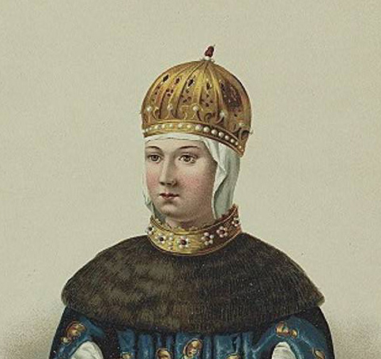Наталья Нарышкина
Вторая жена царя Алексея Михайловича. Была повенчана в 19 лет в 1671 году, в браке с церем родила троих детей. Наталья Кирилловна после смерти Алексея Михайловича оказывала большое влияние на своего сына Петра I, проживая с ним в подмосковье в опальном положении.
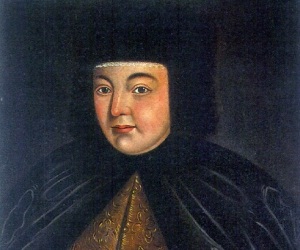Дмитрий Алексеевич
Сын Марии Милославской и Алексея Михайловича. Годы жизни: 1648 - 1649 (умер в младенчестве). Наследник престола родился в день «чудотворныя иконы Казанския, во время всенощного бдения», в связи с чем было установлено общецерковное почитание Казанской иконы Божией Матери.
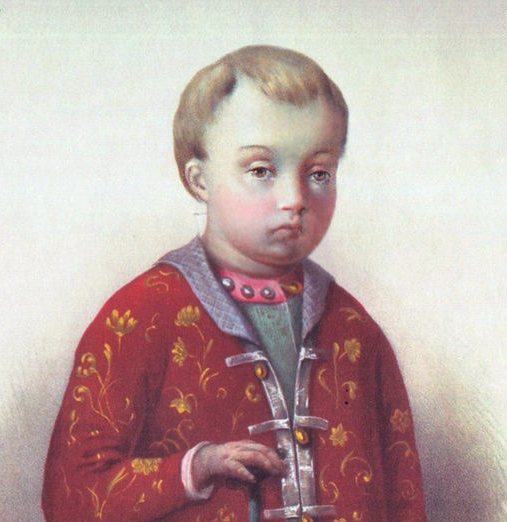Евдокия Алексеевна
Дочь Марии Милославской и Алексея Михайловича. Годы жизни: 1650 - 1712. Незамужняя, большую часть жизни провела в тереме, а после Стрелецкого бунта - в Новодевичьем монастыре, в государственных делах не принимала участия.
?Марфа Алексеевна
Дочь Марии Милославской и Алексея Михайловича. Годы жизни: 1652 - 1707. В 1698 году за сочувствие и помощь своей сестре царевне Софье была пострижена в Успенском монастыре в Александровой слободе под именем «Маргариты».
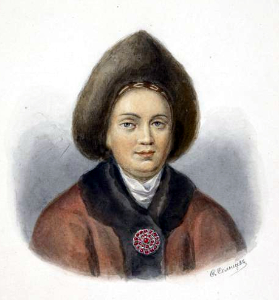Алексей Алексеевич
Сын Марии Милославской и Алексея Михайловича. Годы жизни: 1654 - 1670. Как наследник престола, во время отсутствия отца в столица считался временным правителем, грамоты издавались от его имени. Церевич умер в возрасте 15 лет, внезапная кончина стала поводом для появления лже-Алексеев во время восстания Степана Разина.
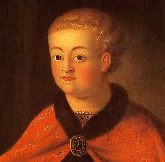Анна Алексеевна
Дочь Марии Милославской и Алексея Михайловича. Годы жизни: 1655 - 1659 (умерла в детстве).
?Софья Алексеевна
Дочь Марии Милославской и Алексея Михайловича. Годы жизни: 1657 - 1704. Вопреки обычаям Софья обучалась вместе с ее братьями у наставника Симеона Полоцкого.После Стрелецкого бунта была регентом при младших братьях Иване и Петре, фактически управляя страной до совершеннолетия Петра.
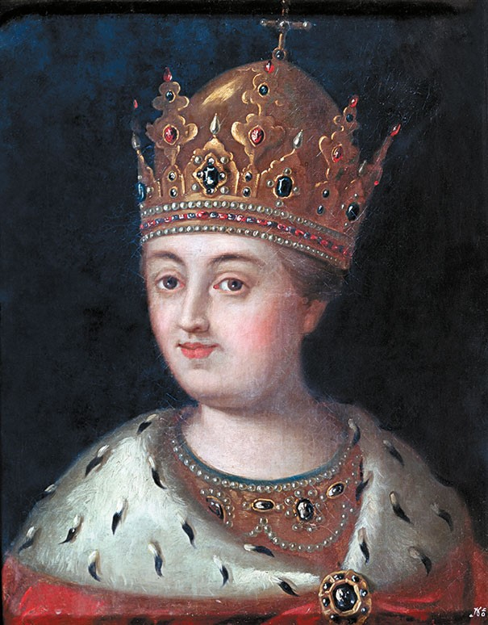Екатерина Алексеевна
Дочь Марии Милославской и Алексея Михайловича. Годы жизни: 1658 - 1718. Держалась в стороне от государевых дел, не пострадала и во время стрелецкого бунта, уже во время правления Петра крестила Марту Скавронскую, будущую императрицу Екатерину I.
?Мария Алексеевна
Дочь Марии Милославской и Алексея Михайловича. Годы жизни: 1660 - 1723. Не участвовала в политических делах, но поддерживала хорошие отношения не только со своими сестрами (в т.ч. Софьей), но и с первой женой Петра I Евдокией. За поддержку Евдокии и ее сына Алексея Петровича в 1718 году была привлечена к следствию и арестована, но в тот же год отпущена.
?Федор Алексеевич
Сын Марии Милославской и Алексея Михайловича. Годы жизни: 1661 - 1682. Официально объявлен в статусе наследника престола только в сентябре 1675 года, царствовал с 1676 по 1682 гг. (Федор III).
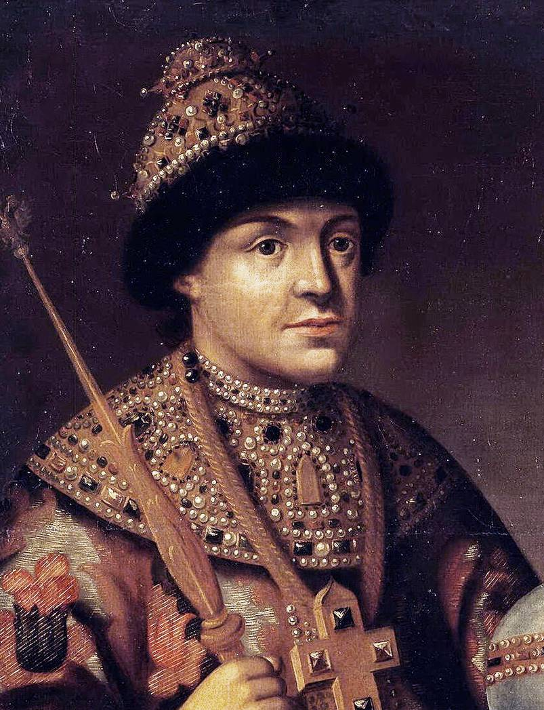Феодосия Алексеевна
Дочь Марии Милославской и Алексея Михайловича. Годы жизни: 1662 - 1713. Большую часть жизни провела в тереме, а в 1698 году приняла монашеский постриг под именем Сусанна.
?Симеон Алексеевич
Сын Марии Милославской и Алексея Михайловича. Годы жизни: 1665 - 1669 (умер в детстве).
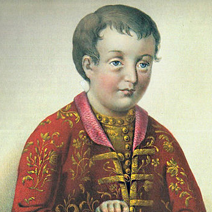Иван Алексеевич
Сын Марии Милославской и Алексея Михайловича, отец императрицы Анны Иоановны. Годы жизни: 1666 - 1696. Был соправителелем вместе с Петром I при регентстве его сестры царевны Софьи. Был слаб здоровьем и не проявлял интереса к государственным делам. Его царствие, как при Софье, так и после ее заточения в монастырь, было скорее номинальным.
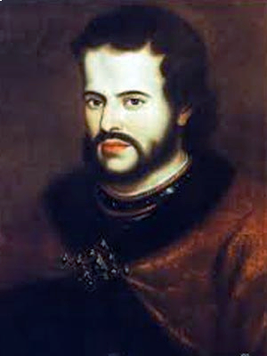Евдокия Алексеевна
Дочь Марии Милославской и Алексея Михайловича. Годы жизни: 1669 - 1669 (умерла во младенчестве).
?Петр Алексеевич
Сын Натальи Нарышкиной и Алексея Михайловича. Годы жизни: 1672 - 1725. Петр I был последним царем всея Руси и первым императором Всероссийским. Был провозглашен царем еще в возрасте 10 лет, однако начал править самостоятельно только после совершенолетия.
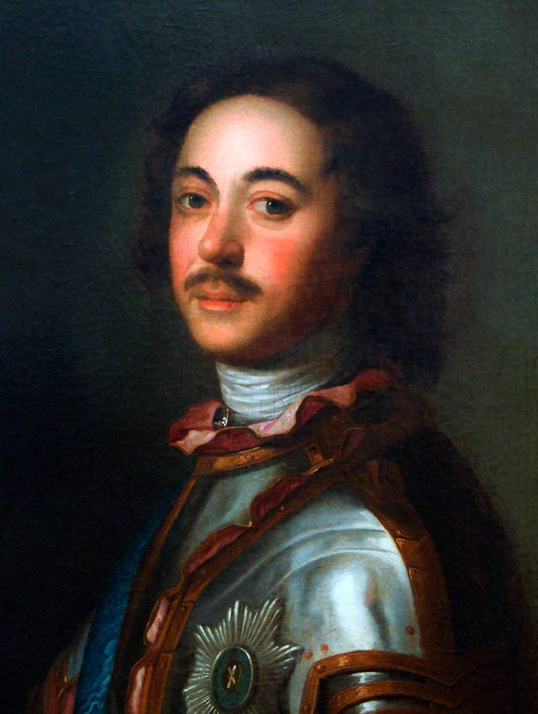Наталья Алексеевна
Дочь Натальи Нарышкиной и Алексея Михайловича. Годы жизни: 1673 - 1716. Наталья воспитывалась уже в менее строгой манере нежели ее сестры, во многом разделяя увлечения своего брата Петра I. Принимала личное участия в семейных делах своего брата (в частности ей был отдан маленький царевич Алексей после заточения в монастырь первой жены Петра). Наталья приложила немало труда для развития театрального искусства, усилиями царевны начались театральные представления сначала в Преображенском, а потом и в Санкт-Петербурге для дворянской публики.
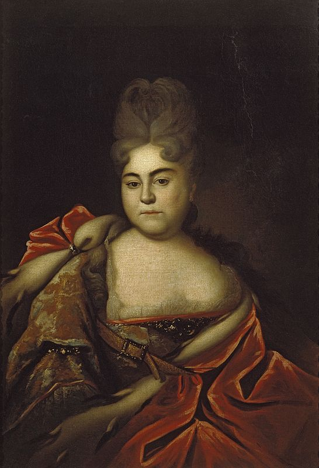Феодора Алексеевна
Дочь Натальи Нарышкиной и Алексея Михайловича. Годы жизни: 1674 - 1777 (умерла в детстве).
?
Итоги правления
Внешняя политика
Во время Русско-польской войны (1654—1667) в ходе успешного государева похода 1654 года был осаждён и взят Смоленск, а также целый ряд городов Великого княжества Литовского в нынешней восточной Беларуси.
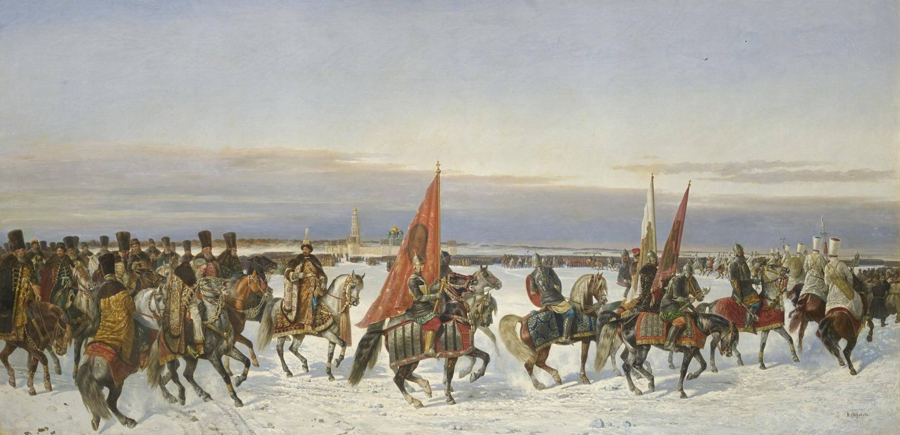Наиболее значительным внешнеполитическим успехом стало возвращение утраченных земель и присоединение Левобережной Украины. Вместе с тем попытка добиться выхода к Балтийскому морю в 1656 –1658 гг. закончилась неудачно.
Завоевание во время русско-шведской войны территорий Ливонии, которые находились под контролем Русского царства до 1661 г, после чего от них пришлось отказаться во избежание одновременной войны со Швецией и Польшей
Внутреняя политика
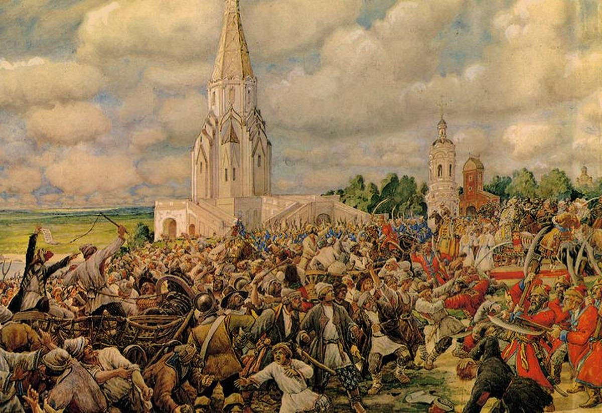В 1649 г. составлено и издано Соборное уложение, которое закрепило основу крепостничества и упрочения абсолютизма: окончательное прикрепление тяглых классов, крестьян и посадских людей, к месту жительства (переход воспрещён был в 1648) году не только крестьянам-хозяевам, но и детям их, братьям и племянникам, вводился бессрочный розыск беглых крестьян.
Возрастало значение и роль бюрократии взамен теряющей влияние Боярской думы. Основаны новые центральные учреждения: приказы Хлебный, Рейтарский, Счетных дел, Малороссийский, Литовский, Монастырский. В числе учрежденных был и самый многочисленный приказ Тайных дел на Лубянке, который занимался делами цензуры, тайной полиции и контрразведки, имел систему пыточных подвалов и тюрем.
Многочисленные изменения во внутренней политике регулярно вызывали бунты и восстания. Еще в самом начале правления в 1648 году случился Соляной бунт (как результат роста взяточничества, казнокрадства, повышения пошлин и, как следствие этого, цен на соль). В 1662 г. во время Медного бунта, поднявшегося в результате опустошения казны и неудачной монетной реформы, царь приказал «бити и рубити до смерти» восставших. Также жестоко было подавлено восстание Степана Разина 1670-1671 гг.
При Алексее Михайловиче продолжалось освоение Сибири: основаны Симбирск, Нерчинск, Иркутск, Пенза, Кунгур, Селенгинск.
Культура и образование
В период правления Алексея Михайловича начался и церковный раскол, который был следствием реформ патриарха Никона. Реакцией на церковную политику стало Соловецкое восстание 1667–76 гг., подавленное правительственными войсками.
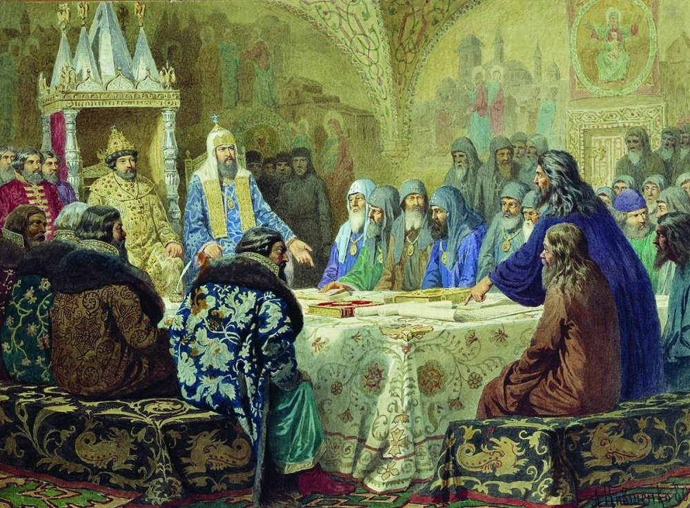Была основана Новая Немецкая слобода в Москве, центр которой находился в районе современной Бауманской улицы. "Немцами" в те времена называли всех иностранцев (от слова "немой" или не говорящий по-русски)
По указу царя построено первое театральное здание в селе Преображенском для проведения спектаклей при дворе. В июне 1673 года в театральную школу при Комедийной хоромине были набраны русские актёры из молодых подьячих и других служащих, всего около 70 человек